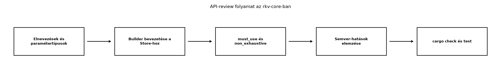

A C++-ban az API tervezését gyakran a fejlécekben deklarált függvénytúlterhelések, az implicit konverziók és a default paraméterek alakítják. A hívó oldal kényelmét szolgálják, de könnyen rejtett költségekhez, félreérthető túlterhelési feloldáshoz vagy véletlen másolásokhoz vezetnek. A Rust ezeket az eszközöket szándékosan elhagyja: nincs függvénytúlterhelés, nincs implicit konverzió, nincs default paraméter. Helyette a nyelv és a közösségi irányelvek explicit, kiszámítható mintákat adnak: konverziós trait-ek, builder típusok, kölcsönzésbarát paraméterek. Ez az alfejezet az rkv-core nyilvános API-ját vizsgálja felül ezen irányelvek szerint, és előkészíti a Záróprojekt: az rkv teljes rendszerként alfejezetet.
Definíció. Az API Guidelines a Rust
közösség által karbantartott, idiomatikus könyvtár-API-kra vonatkozó
ajánlásgyűjtemény. Nem nyelvi szabály, de a cargo
ökoszisztéma, a dokumentáció és a hívók elvárása erre épül. A
legfontosabb területek: elnevezés, konverziók, paramétertípusok,
hibakezelés, jövőbiztosság.
Szabály. Az elnevezési konvenciók: - típusok és
trait-ek: UpperCamelCase (Store,
Storage, IntoIterator); - függvények,
metódusok, változók, modulok, crate-ek: snake_case
(get_value, parse_command); - konstansok és
statikusok: SCREAMING_SNAKE_CASE
(MAX_CAPACITY); - a get_ előtagot kerüljük, ha
a metódus egyszerű mező-hozzáférést ad; a get C++-os
szokás, Rustban inkább key() vagy value()
használatos, a get fenntartott a Option-t
visszaadó indexelésre.
Szabály. A konverziós metódusok előtagjai: -
as_ olcsó, kölcsönzött nézetet ad vissza:
as_str(), as_bytes(), as_ref().
Nem fogyasztja a hívót. - to_ tulajdonjogot adó, gyakran
drágább konverzió: to_string(), to_owned(),
to_vec(). - into_ a hívót elfogyasztó,
tulajdonjogot adó konverzió: into_bytes(),
into_iter(). A C++-ban megszokott
get/to keveréke helyett ez a három előtag
egyértelműen jelzi a költségmodellt.
Definíció. A konverziós trait-ek: -
From<T> for U: párhuzamos az implicit
C++-konverzióval, de explicit hívást igényel (U::from(t)
vagy t.into()). Implementálása nem okozhat hibát és nem
allokálhat indokolatlanul. Ha From<T>-t
implementáljuk, az Into<U> automatikusan
rendelkezésre áll. - AsRef<T>: kölcsönzött
referenciává alakítás olcsón, például String →
&str, Vec<u8> →
&[u8]. Függvényparaméterben
impl AsRef<str> elfogad &str,
String, Cow<str> értékeket is. -
Borrow<T>: hasonló, de elsősorban
gyűjtemény-kulcsokhoz (HashMap-keresés) és a
Cow-hoz; a Borrow<str> a
String-re garantálja, hogy a hash és az egyenlőség
megegyezik.
Szabály. Paramétertípusok: - szöveg esetén
&str, bájtsorozat esetén &[T], hacsak
a függvény nem szerzi meg a tulajdonjogot; - tulajdonjog megszerzésekor
String, Vec<T> vagy
impl Into<String> — ez utóbbi a hívónak rugalmasságot
ad; - soha ne fogadjunk &String vagy
&Vec<T> paramétert; a
&Option<T> is kerülendő, mert a hívó
None-t és Some(x)-et is átadhat, de az API
zavaros; - gyűjteményt fogyasztó függvénynél
impl IntoIterator<Item = T> a legáltalánosabb.
Definíció. A builder minta olyan típus,
amely lépésenként gyűjti a konfigurációt, majd egy build()
metódussal hozza létre a céltípust. Két változata: - consuming
builder: minden setter self-et fogyaszt és
Self-et ad vissza, így láncolható; az ideiglenes értékek
mozgatása olcsó; - mutable builder: a setterek
&mut self-et vesznek fel és
&mut Self-et adnak vissza; akkor hasznos, ha a builder
állapota nagy, vagy a láncolás nem kell. A Rustban a consuming builder
az idiomatikus, mert a mozgatás alapértelmezett, és a láncolás
kényelmes.
Definíció. A #[must_use] attribútum
arra figyelmezteti a hívót, hogy a visszatérési érték figyelmen kívül
hagyása valószínűleg hiba. Minden Result-ot,
Option-t vagy erőforrást visszaadó függvényt
#[must_use]-zal jelölünk, mert a hiba elhallgatása a
C++-ban megszokott errno-ellenőrzés elmaradásához
hasonló.
Definíció. A #[non_exhaustive]
attribútum egy enumon vagy structon jelzi, hogy a típus új variánsokkal
vagy mezőkkel bővülhet a jövőben anélkül, hogy a szemantikus verziózás
szerinti minor (kisebb) frissítés törő lenne. A hívó oldalán
kötelező egy _ wildcard ág a match-ben, és a
struct literál kívülről nem hozható létre. Nyilvános, bővíthető API-k
esetében alapértelmezés.
Szabály. A szemantikus verziózás (semver) szerint: -
patch (0.0.x): hibajavítás, nem változtat API-t; -
minor (0.x.0): visszafelé kompatibilis bővítés (új típus, új
trait-implementáció, új függvény, #[non_exhaustive] típus
bővítése); - major (x.0.0): törő változás (típus eltávolítása,
szignatúra megváltoztatása, #[non_exhaustive] hozzáadása
meglévő típushoz, trait-objektum-határ megváltoztatása). A
cargo-semver-checks eszköz automatikusan összehasonlítja a
publikált crate API-ját a jelenlegivel, és jelzi a törő változásokat; a
pontos telepítési és használati módját a docs.rs-en ellenőrizni
kell.
C++-ban egy függvény rugalmasan fogadhat stringet:
#include <string>
#include <string_view>
void save(const std::string& path) { /* ... */ }
void save(std::string_view path) { /* ... */ }
void save(const char* path) { /* ... */ }A túlterhelések a hívó kényelmét szolgálják, de a három változat
fenntartása ismétlés, és a std::string_view élettartama a
hívó felelőssége. Rustban nincs túlterhelés, ezért a paramétert úgy
választjuk meg, hogy a lehető legtöbb hívási formát elfogadja:
# use std::path::Path;
pub fn save(path: impl AsRef<Path>) -> std::io::Result<()> {
let path = path.as_ref();
// ...
Ok(())
}A hívó átadhat &str-et, String-et,
Path-ot vagy PathBuf-ot, a konverzió explicit
és olcsó. A különbség: a Rust az impl AsRef-fel egyetlen
függvényben fejezi ki azt, amit C++-ban három túlterheléssel kell.
C++-ban az implicit konverzió gyakran meglepi a fejlesztőt:
void process(int value);
process(3.14); // double -> int, esetleg figyelmeztetésselRustban az implicit konverzió nem létezik, a
From/Into explicit:
# fn process(value: i32) {}
# let x = 3.14_f64;
process(x as i32); // explicit cast
process(x.round() as i32);C++-ban a default paramétereket builder minta helyettesíti:
void connect(const std::string& host, int port = 6379, int timeout_ms = 1000);# struct Connection;
# impl Connection {
# fn builder() -> ConnectionBuilder { ConnectionBuilder }
# }
# struct ConnectionBuilder;
# impl ConnectionBuilder {
# fn port(self, port: u16) -> Self { self }
# fn timeout(self, timeout_ms: u64) -> Self { self }
# fn build(self) -> Connection { Connection }
# }
let conn = Connection::builder()
.port(6380)
.timeout(500)
.build();A builder explicit lépésekre bontja a konfigurációt, és a
build() hibát is visszaadhat, ha az állapot
érvénytelen.
Munkakönyvtár: ~/rust-labor/rkv/ — a
workspace, benne az rkv-core crate. A labor az rkv-core
API-review-ját végzi el az irányelvek alapján.
Tegyük fel, hogy az rkv-core jelenlegi nyilvános API-ja
(a korábbi alfejezetekből) körülbelül így néz ki:
// rkv-core/src/lib.rs (vázlat, a labor előtt)
pub mod error;
pub mod storage;
pub mod store;
pub mod command;
pub use error::Error;
pub use storage::Storage;
pub use store::Store;
pub use command::Command;// rkv-core/src/store.rs (részlet, a labor előtt)
pub struct Store {
inner: std::collections::HashMap<String, Vec<u8>>,
}
impl Store {
pub fn new() -> Self {
Self { inner: std::collections::HashMap::new() }
}
pub fn get(&self, key: &String) -> Result<Option<Vec<u8>>, crate::Error> {
Ok(self.inner.get(key).cloned())
}
pub fn set(&mut self, key: String, value: Vec<u8>) -> Result<(), crate::Error> {
self.inner.insert(key, value);
Ok(())
}
}Ez a kód működik, de több ponton nem idiomatikus:
get(&self, key: &String) — a
&String feleslegesen szűkíti a hívót;
&str elfogad String-ből is deref
koercóval.Store::new() nem ad lehetőséget a kezdeti kapacitás
vagy más opció beállítására; a későbbi perzisztencia (lásd I/O és szerializáció: fájlok, pufferelés, serde)
miatt builder kell.Result-ot visszaadó metódusok nincsenek
#[must_use]-zal jelölve, így a hiba figyelmen kívül
hagyható.Command enum és az Error enum nyilvános,
de nem #[non_exhaustive], ezért későbbi variáns hozzáadása
major verzióemelést igényelne.A felülvizsgált API:
// rkv-core/src/store.rs (részlet, a labor után)
use std::collections::HashMap;
use crate::Error;
pub struct Store {
inner: HashMap<String, Vec<u8>>,
}
impl Store {
pub fn builder() -> StoreBuilder {
StoreBuilder::new()
}
/// Visszaadja a kulcshoz tartozó értéket, ha létezik.
#[must_use = "a hibát és a hiányzó kulcsot kezelni kell"]
pub fn get(&self, key: &str) -> Result<Option<&[u8]>, Error> {
self.inner.get(key).map(|v| v.as_slice()).ok_or_else(|| {
// Az Error::KeyNotFound(String) variáns itt nem pontos, mert a
// None nem hiba, hanem hiányzó kulcs; lásd a labor szövegét.
Error::KeyNotFound(key.to_owned())
})
}
pub fn set(&mut self, key: String, value: Vec<u8>) -> Result<(), Error> {
self.inner.insert(key, value);
Ok(())
}
}
pub struct StoreBuilder {
capacity: Option<usize>,
}
impl StoreBuilder {
fn new() -> Self {
Self { capacity: None }
}
pub fn capacity(mut self, capacity: usize) -> Self {
self.capacity = Some(capacity);
self
}
pub fn build(self) -> Store {
let inner = match self.capacity {
Some(cap) => HashMap::with_capacity(cap),
None => HashMap::new(),
};
Store { inner }
}
}A get visszatérési típusát
Option<Vec<u8>>-ról
Option<&[u8]>-ra változtattuk: a tároló nem ad
tulajdonjogot, a hívó dönthet arról, hogy klónoz-e. Ez a változás
azonban törő: a hívó oldal
Option<Vec<u8>>-at várt, most
Option<&[u8]>-ot kap. Ha az rkv-core még nem
publikált, ez elfogadható; ha már igen, major verzió kell.
Vegyük észre a get hibakezelési problémáját is: a
None visszatérése nem hiba, hanem a kulcs hiányát jelenti.
A korábbi Error::KeyNotFound variáns inkább a
parancsfeldolgozás szintjén használható, ahol a GET parancs
NOTFOUND választ ad. A Store::get-nek nincs
szüksége hibára, hacsak a perzisztencia nem hibázik; ezért a valódi
Storage trait-ben a
Result<Option<Vec<u8>>, Error> maradhat
az I/O-hibák miatt, de a memóriabeli MemStore esetében a
Result elhagyható lenne. A laborban ezt a döntést nyíltan
kimondjuk: a Store szinkron API-ja Option-t ad
vissza, a Storage trait aszinkron vagy I/O-s implementációi
Result-ot használnak.
Munkakönyvtár: ~/rust-labor/rkv/ — a
workspace, benne az rkv-core crate.
A feladat az rkv-core nyilvános API-jának átvizsgálása az irányelvek szerint. Az ellenőrzőlista:
UpperCamelCase vagy snake_case; nincs
get_ előtag egyszerű mező-hozzáférésnél.&String vagy &Vec<T>; szöveg
&str, bájtsorozat &[u8].From/Into
implementálva a parancsok és a hibatípusok között, ahol van értelme;
AsRef a paraméterekben.Store létrehozása
builderrel történik, nem new()-val, ha opciók vannak.#[must_use]: minden
Result-ot vagy Option-t visszaadó nyilvános
függvény megjelölve.#[non_exhaustive]: a
Command és az Error enum jelölve, mert
bővíthetők.cargo-semver-checks futtatása (ha a crate már
publikált).Lépések:
rkv-core/src/store.rs fájlt, és
cseréljük le a get(&String) paramétert
&str-re, a visszatérési értéket
Option<&[u8]>-ra. A set marad
String és Vec<u8> paraméterrel, mert
tulajdonjogot szerez.StoreBuilder-t a fenti példa szerint, és
távolítsuk el a Store::new()-t, vagy tegyük priváttá a
HashMap::new() hívást a builder build()
metódusában.#[must_use]-t a Store::get és a
Storage trait metódusaihoz.rkv-core/src/command.rs-ben a Command
enumra tegyünk #[non_exhaustive]-t, és adjunk hozzá egy
parse(&str) -> Result<Command, Error>
függvényt, amely a szöveges protokollt elemzi. A parse is
legyen #[must_use].rkv-core/src/error.rs-ben az Error
enumra tegyünk #[non_exhaustive]-t.cargo check és cargo test
parancsokat a workspace-ben:cd ~/rust-labor/rkv
cargo check --all-targets
cargo test -p rkv-coreVárt kimenet: a cargo check sikeresen lefordul, a
tesztek futnak; a Store::get(&String) hívások a
tesztekben &str-re változnak, a
Store::new() hívások
Store::builder().build()-re.
Ellenőrizzük a semver-hatást: a &String →
&str paramétercsere általában nem törő a hívó oldalon a
deref koerció miatt, de a függvénypointer-szignatúra megváltozik; a
Option<Vec<u8>> →
Option<&[u8]> visszatérési típus törő; a
#[non_exhaustive] hozzáadása meglévő típushoz törő. Ha az
rkv-core még nem publikált, ezek együtt elvégezhetők; ha már igen, major
verzióemelés szükséges. A cargo-semver-checks futtatásához
telepíteni kell az eszközt, és a pontos parancs a dokumentációban
ellenőrizendő.
Az átdolgozott API-t a Záróprojekt: az rkv teljes rendszerként használja tovább.

&String paraméter a
&str helyett. A C++-ban megszokott
const std::string& mintát sokan
&String-ként ültetik át, de ez feleslegesen szűkíti a
hívót, és a &String dupla indirekciót is jelent. A
&str elfogad String-ből deref koercióval,
és a kölcsönzési szabályok is egyszerűbbek.
unwrap/expect a nyilvános
API-ban. A hívó oldali hiba elrejtése a C++-ban megszokott
kivételkezelés nélküli világban különösen veszélyes. Minden hibát
Result-ként adjunk vissza, és #[must_use]-zal
jelöljük; a panic! csak invariáns-sértés esetén
elfogadható.
A builder setterek &mut self-et adnak
vissza. Bár működik, a consuming builder idiomatikusabb, mert a
mozgatás olcsó, és a láncolás kifejezőbb. A
&mut self-es változatnál a hívó kénytelen külön
változót tartani, és a builder állapota megváltoztatható marad a
build() után is.
#[non_exhaustive] elhagyása nyilvános
enumoknál. A Command és az Error
bővíthető; ha nem jelöljük, minden új variáns törő változás. A C++-ban
az enum class bővítése is törő lehet, de ott a header-fájl
frissítése a teljes fordítási egységet újrafordítja; Rustban a semver
ezt explicit módon kezeli.
Fogalmi kérdés. Mi a különbség az
as_, to_ és into_ előtagok
között? Adj mindegyikre egy-egy példát a standard könyvtárból, és mondd
meg, melyik mikor allokálhat.
C++-kód átírása. Adott a C++ függvény:
void process(const std::string& name, const std::vector<int>& values);Írd át idiomatikus Rust-függvénnyé, amely nem szerez tulajdonjogot, és magyarázd el a paraméterválasztást.
Implementációs feladat. Az
rkv-core/src/command.rs-ben valósítsd meg a
Command::parse(&str) -> Result<Command, Error>
függvényt, amely a GET <kulcs>,
SET <kulcs> <érték>,
DEL <kulcs>, LIST [<prefix>]
parancsokat elemzi. A függvény legyen #[must_use], és a
Command enum legyen #[non_exhaustive]. A hibás
bemenetre Error::InvalidCommand(String)-et adjon
vissza.
Tervezési döntés. Az
rkv-core/src/error.rs-ben az Error enum
jelenleg nem #[non_exhaustive]. Indokold meg, hogy miért
érdemes hozzáadni, és mondd ki, hogy ez a változás törő-e a semver
szerint. Ha törő, hogyan lehet mégis elvégezni egy még nem publikált
crate-ben?
Az as_ olcsó, kölcsönzött nézetet ad:
str::as_bytes() → &[u8], nem allokál. A
to_ tulajdonjogot adó, általában allokáló konverzió:
String::from("x") helyett "x".to_string()
String-et hoz létre, másolhat. Az into_ a
hívót elfogyasztó, tulajdonjogot adó: String::into_bytes()
Vec<u8>-at ad, a String megsemmisül;
allokálhat, ha a reprezentáció megváltozik.
Az idiomatikus Rust-függvény:
fn process(name: &str, values: &[i32]) {
// ...
}A name &str-ként elfogad
String-ből is deref koercióval, a values
&[i32] pedig Vec<i32>-ből. A
függvény nem szerez tulajdonjogot, a hívó dönt a másolásról.
Command::parse implementációja:// rkv-core/src/command.rs
use crate::Error;
#[non_exhaustive]
pub enum Command {
Get(String),
Set(String, Vec<u8>),
Delete(String),
List(Option<String>),
}
impl Command {
#[must_use = "a parancs hibáját kezelni kell"]
pub fn parse(line: &str) -> Result<Self, Error> {
let mut parts = line.split_whitespace();
match parts.next() {
Some("GET") => {
let key = parts.next().ok_or_else(|| Error::InvalidCommand(line.into()))?;
Ok(Command::Get(key.to_owned()))
}
Some("SET") => {
let key = parts.next().ok_or_else(|| Error::InvalidCommand(line.into()))?;
let value = parts.next().ok_or_else(|| Error::InvalidCommand(line.into()))?;
Ok(Command::Set(key.to_owned(), value.as_bytes().to_vec()))
}
Some("DEL") => {
let key = parts.next().ok_or_else(|| Error::InvalidCommand(line.into()))?;
Ok(Command::Delete(key.to_owned()))
}
Some("LIST") => {
let prefix = parts.next().map(|s| s.to_owned());
Ok(Command::List(prefix))
}
_ => Err(Error::InvalidCommand(line.into())),
}
}
}Error enum bővíthető (például később hálózati hibák,
FFI-hibák), ezért #[non_exhaustive]-t érdemes hozzáadni. Ez
a változás törő, mert a kliens kódjában a kimerítő match
többé nem fordul le wildcard nélkül. Ha a crate még nem publikált, a
változtatás elvégezhető külön major verzió nélkül; ha már publikált,
major verzióemelés szükséges.Az rkv-core nyilvános API-ját az API Guidelines szerint dolgoztuk át.
A Store::get paramétere &str, visszatérési
értéke Option<&[u8]>; a Store
létrehozása StoreBuilder-rel történik
(Store::builder().capacity(...).build()). Minden
Result-ot visszaadó függvény #[must_use]; a
Command és az Error enum
#[non_exhaustive]. A
Command::parse(&str) -> Result<Command, Error>
függvény a szöveges protokollt elemzi. A semver-hatás: a
&String → &str csere általában nem
törő, a Option<Vec<u8>> →
Option<&[u8]> és a #[non_exhaustive]
hozzáadása törő; mivel az rkv-core még nem publikált, ezek együtt
elvégezhetők. Továbbvitt eredmény: az átdolgozott
rkv_core::Store, Storage trait,
Command, Error és a StoreBuilder
a Záróprojekt: az rkv teljes rendszerként
alapja.
#[must_use], #[non_exhaustive],
AsRef, Borrow,
From/Into a Rust standard könyvtár stabil
részei; a részletek a std dokumentációjában
ellenőrizhetők.cargo-semver-checks eszköz pontos telepítési és
futtatási módja a https://crates.io/crates/cargo-semver-checks oldalon
ellenőrizendő; a verziószámok és a parancssori kapcsolók
frissülhetnek.